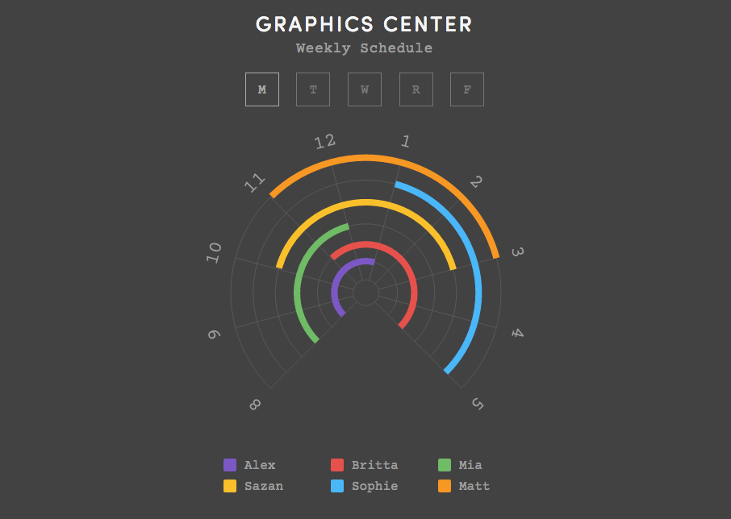

Self-Initiated Project
While I was in college, I worked at a student-run design studio. During my last semester, I made an interactive online schedule for my co-workers and I. The previous semester, I had redesigned the website and used a lot of SVG elements on the page. This self-initiated project was inspired by the studio site redesign because I really enjoyed working with vector graphics on the web and I wanted push my web animation skills further. I used a popular JavaScript animation engine (GSAP) to create smooth transitions and a fun opening animation. Check out the web page to see it in action!

Online Screenshot